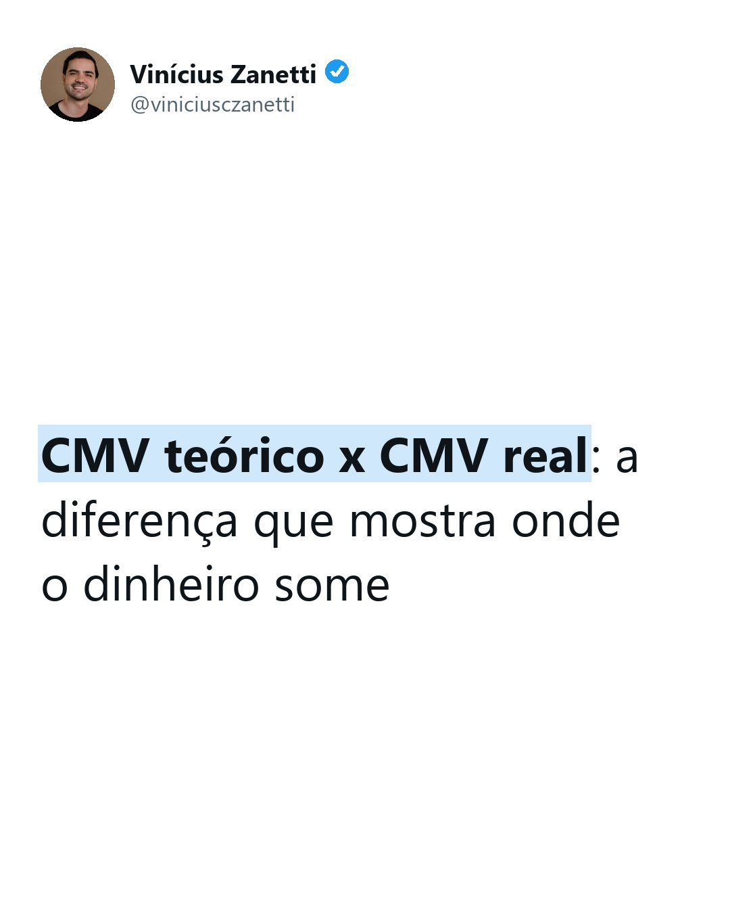

CMV teórico x CMV real: a distância entre os dois é onde o lucro some
A ficha técnica diz quanto o restaurante deveria gastar. O inventário diz quanto gastou. Quando os dois não batem, há desperdício, desvio ou erro de processo. Veja como calcular e por onde investigar.
Publicado em 16/11/2026
Saber o CMV do mês não basta. O restaurante pode ter um CMV de 35% e não saber se isso é a receita do cardápio ou a cozinha gastando mais do que deveria. A resposta está na comparação entre dois números: o CMV teórico, que sai da ficha técnica, e o CMV real, que sai do estoque.
No livro Restaurante no Controle, o consultor Vinícius Zanetti trata essa diferença como um alarme. Quando os dois números se afastam, algo no processo de compras, no estoque ou na execução da cozinha precisa ser investigado antes de comprometer o resultado.

O que é CMV teórico?
É quanto a comida vendida deveria ter custado se tudo tivesse saído como manda a ficha técnica: quantidade certa, porção padrão e nenhuma perda. A Abrasel, na cartilha sobre CMV, chama o teórico de custo ideal. O livro cita a mesma ideia num artigo de Márcio Rodrigues: uma estimativa do custo que deveria ter sido gasto para produzir os pratos vendidos.
Como calcular o CMV teórico?
- Tenha a ficha técnica de cada item. Com o custo de cada ingrediente pelo preço atual e o fator de correção aplicado nos insumos que perdem peso.
- Puxe a quantidade vendida no mês. Item por item, do sistema de vendas.
- Multiplique o custo da ficha pela quantidade vendida. Some todos os itens.
- Divida pela venda de produtos. O resultado é o CMV teórico em percentual.
E o CMV real, como se calcula?
Pelo estoque. A fórmula, a mesma usada pela Abrasel, é estoque inicial mais compras do mês menos estoque final. Ela pega tudo o que saiu da cozinha, inclusive o que ninguém anotou. Os erros mais comuns nessa conta, como usar as compras do mês no lugar do CMV, estão na matéria CMV não é compras do mês.
| CMV teórico | CMV real | |
|---|---|---|
| De onde sai | Ficha técnica x quantidade vendida | Estoque inicial + compras - estoque final |
| O que mostra | Quanto deveria ter custado | Quanto de fato custou |
| Depende de | Ficha técnica atualizada | Inventário contado no fim do mês |
O que significa a diferença entre os dois?
A diferença é o custo que não estava no cardápio. O livro resume em três causas: desperdício, desvio ou erro de processo. A cartilha da Abrasel detalha o que costuma empurrar o CMV real para cima: desperdício, erros de porcionamento, avarias, perdas não registradas, desvios e furtos.
"Quando essa comparação revela divergência, há um sinal claro de desperdício, desvio ou erro de processo que precisa ser investigado."Vinícius Zanetti, no capítulo Estrutura do livro Restaurante no Controle
Neste exemplo, imagine um restaurante com CMV teórico de 30% e CMV real de 35%. A comida vendida custou 5 pontos a mais do que o cardápio prevê. O livro faz a conta desse tamanho de desvio num restaurante de R$ 100 mil por mês: R$ 5 mil a menos de resultado todo mês, R$ 60 mil por ano.
| Neste exemplo do livro | Valor |
|---|---|
| Faturamento do mês | R$ 100.000 |
| Diferença entre CMV real e teórico | 5 pontos percentuais |
| Resultado perdido por mês | R$ 5.000 |
| Resultado perdido por ano | R$ 60.000 |
A diferença sempre é culpa da cozinha?
Não. Às vezes o erro está no próprio CMV teórico. Se o preço do queijo subiu e a ficha não foi revisada, o teórico fica baixo demais e a diferença parece desperdício, quando é só ficha velha. A Abrasel chama esse caso de CMV teórico ilusório. Por isso a primeira checagem é sempre na ficha: preço do insumo atualizado, rendimento conferido e receita igual à que a cozinha faz hoje.
Do outro lado, um CMV real baixo demais também merece desconfiança. Inventário mal contado, com item esquecido ou contado duas vezes, muda o estoque final e o resultado da fórmula.
Como investigar quando o CMV real passa do teórico?
| Onde olhar | Sinal de problema |
|---|---|
| Ficha técnica | Preço de insumo antigo, rendimento que mudou, receita alterada sem registro |
| Porcionamento | Bife, queijo ou cobertura saindo acima do peso da ficha |
| Compras | Compra sem base no consumo, emergência mais cara, excesso que vence |
| Estoque | Sem primeiro que vence, primeiro que sai; acesso livre; item sem data |
| Vendas | Pedido refeito, cortesia sem registro, cancelamento depois do preparo |
Uma forma de acelerar a busca é comparar por categoria, e não só no total. Se a diferença está concentrada em carnes, o caminho é porção e fator de correção. Se está em bebidas, o caminho é estoque e controle de saída. O livro inclui o CMV por categoria entre os indicadores da etapa Estrutura.
O que o dono de hamburgueria e pizzaria faz com isso
O primeiro passo é ter ficha técnica dos itens mais vendidos com preço atualizado. Sem ela, não existe CMV teórico, e a Abrasel resume: sem ficha técnica, não existe controle de CMV. Na hamburgueria, carne, queijo, pão, bacon e embalagem vêm primeiro. Na pizzaria, massa, molho, queijo e as coberturas por tamanho.
O segundo é contar o estoque no último dia do mês e calcular os dois números lado a lado. Uma diferença pequena e estável é normal. Diferença que cresce mês a mês é o sinal que o livro pede para investigar antes de virar prejuízo.
O terceiro é tratar a causa, não a pessoa. No Método M.E.G.A., inconsistência pede diagnóstico: se a equipe não entendeu o processo, a resposta é treino, e se a ferramenta não funciona, é o processo que muda. Balança na bancada e porcionamento padronizado costumam fechar boa parte da distância.
Perguntas frequentes
O que é CMV teórico?
É quanto a comida vendida deveria ter custado seguindo a ficha técnica, com porção padrão e sem perdas. Calcula-se multiplicando o custo de cada item pela quantidade vendida e dividindo pela venda de produtos.
Qual a diferença entre CMV teórico e CMV real?
O teórico sai da ficha técnica e mostra o custo ideal. O real sai do estoque, com estoque inicial mais compras menos estoque final, e mostra o custo que de fato aconteceu.
Por que o CMV real é maior que o teórico?
Por desperdício, porção acima da ficha, avaria, perda não registrada, desvio ou furto. Também pode ser ficha técnica desatualizada, que deixa o teórico baixo demais.
Quanto deve ser o CMV de um restaurante?
A referência da Zatti é de 25% a 33% da venda de produtos, com inventário mensal. Mais importante que a faixa é a distância entre o CMV real e o teórico, que mostra o que está escapando.
Fontes
- Vinícius Zanetti, Restaurante no Controle: Método M.E.G.A. de gestão para restaurantes (Belo Horizonte, 2026).
- Abrasel, cartilha Custo de Mercadoria Vendida (CMV) para bares e restaurantes (janeiro de 2026).